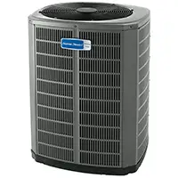
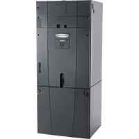
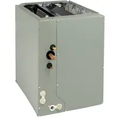
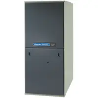
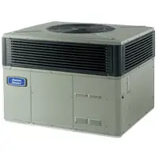
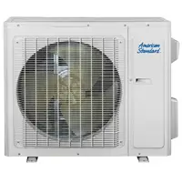
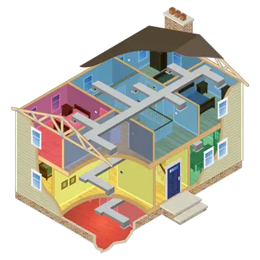
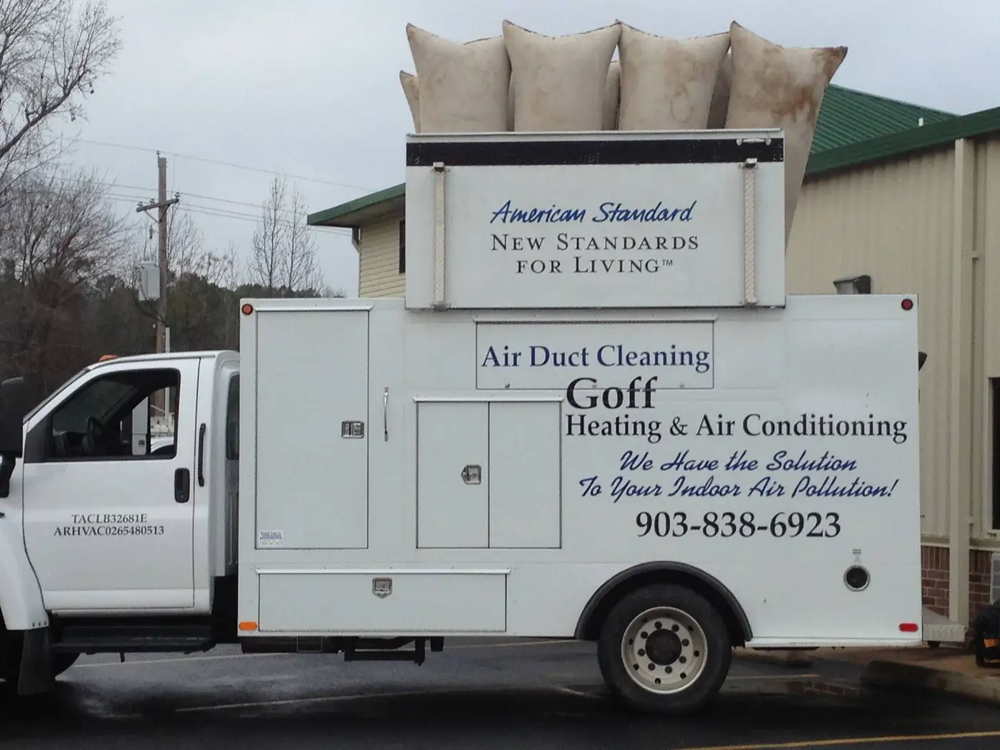
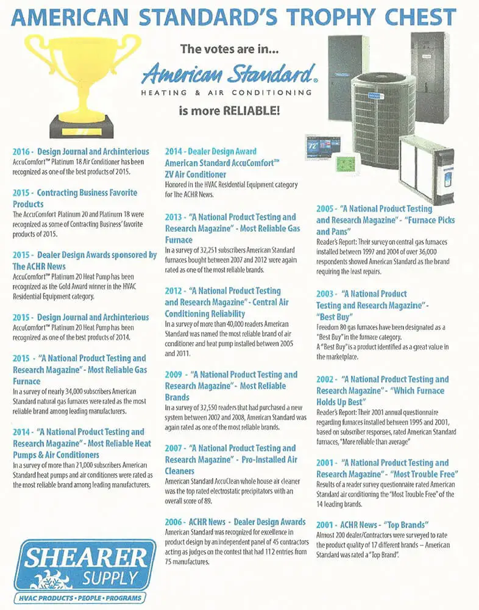
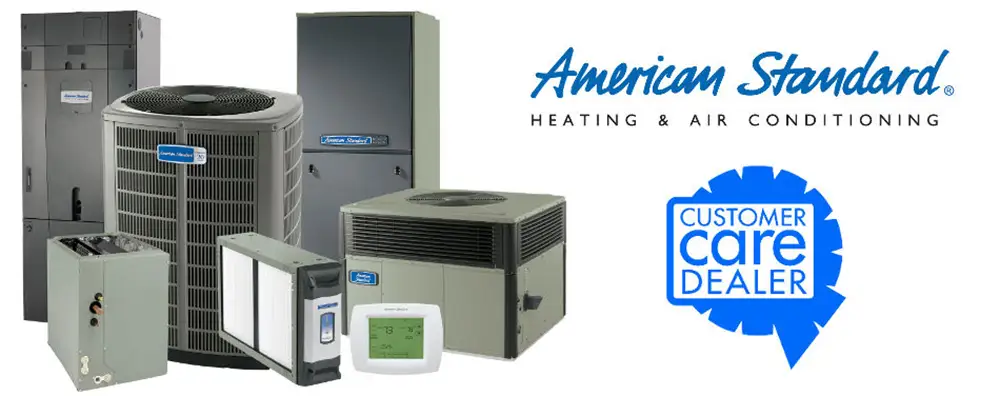

Heating, Air Conditioning & Plumbing Services in Texarkana
Goff Heating / Air Conditioning and Plumbing is Texarkana’s leading HVAC and plumbing contractors. We offer a great deal of services for homes and businesses. Whether it’s repairs, maintenance, or a new installation, we have the crew for you. Give us a call today!
Air Conditioning & Heating
- Licensed by Arkansas and Texas
- We service all makes and models.
- Repair / Service / Cleaning
- Residential and Commercial Installation Remodel/ New Construction
- Free in-home estimate for New or Replacement Equipment
- 24 Hour / 7 Day Emergency Service
- Licensed Technicians
- High Efficiency Energy Star Equipment
- American Standard Durability
- Ductless / Minisplit Options
- Heat Pumps / Dual Fuel Heat Pumps
- Indoor Air Whole-Home Air Filtration with AccuClean
- Wifi / Smartphone thermostats
- Filter Replacement
- Service Area: Greater Texarkana including Miller, Little River, Bowie and Cass Counties
Dryer Vent Cleaning
The leading cause of house fires in America is due to clothes dryers, accounting for over 15,000 fires started each year. Excess lint and other debris builds up within your dryer vent, choking air flow to the dryer, and backing up dryer exhaust gases, creating a fire hazard.
Have us ensure the safety of your home or business with our professional dryer vent cleaning service.
Air Duct Cleaning
When cleaning the air ducts in your home, you must be careful in choosing which system is the best. Having clean ductwork in your home or office is extremely important for the well-being of those inside it. The Environmental Protection Agency (EPA) calculates that indoor air contains up to 70 times more contaminants than outdoor air. Cleaning your ducts can remove allergens like dirt, dust, debris, and mold from your home. It can also prevent them from spreading throughout it via the air conditioning and heating systems.
There are two types of systems used to clean air ducts. The first and most common is a portable system that uses hoses to go through the vents and suck up contaminants in the ducts. The second, and much more effective is the truck-mounted power vac system. It also uses hoses, but there are several differences between the two. When compared there is really only one logical choice.
Our Air Duct Cleaning Service uses the “Push-Pull” Method of Duct Cleaning. In most homes, we use our “Duct Truck”, the strongest duct-cleaning vacuum in the area. This system uses External Extraction – which means the vacuum is on the OUTSIDE of your home!
We remove your air duct vents/registers and block off each opening.
We remove your air blower motor.
We attach an eight-inch hose from the main supply and return ducts in your system to our powerful Truck Mounted Vacuum.
With our Air Wand system, we agitate the dirt and debris from each vent to the main supply duct.
We are continually monitoring the process and inspecting the ductwork. Minor duct work repair needs are identified and corrected.
Then with powerful compressed air equipment, we clean the main duct supply and return sides to the vacuum hose, where the dirt, dust, and allergens are sucked out of your home.
Before replacing, we air clean and vacuum the furnace blower motor fan and (when possible), the evaporator coil on your air conditioning system.
We finish off your clean system by thoroughly cleaning and replacing the air duct vents/registers.
“The preferable method of air duct cleaning is external extraction, pulling debris out of the air ducts, out of the house, and depositing it outside. Truck-mounted power vacuum equipment has many advantages over industrial hand vacuums in this area”
- Dr. Michael Berry, Ph.D
- Deputy Director
- US Environmental Protection Agency
- Criteria and Assessment Office
- September 14, 1990
Plumbing
- Service All Makes and Models
- Residential and Commercial Installation, Remodel and New Construction
- Energy Star Equipment
- Free in-home estimate for New or Replacement Equipment
- 24 Hour / 7 Day Emergency Service
- Licensed Technicians
- Rheem Water Heater Products
- Drain Cleaning
- Electric and Water Jet Machine Drain Cleaning with Camera Inspection.
- Gas Pressure Testing
- Slab Water Leak Testing and Repair
Preventative Maintenance Program
We Can Save You Money! Covering Year-Round Residential Heating and Cooling.
Our maintenance agreements help us provide our quality service at a more affordable price.
Once you have our Maintenance Agreement in place, you become a Priority Customer with our company. This entitles you to a 10% discount on all repair services and materials, priority emergency service, and no labor overtime charges.
Your Maintenance Program can be scheduled with two, four, or six routine calls.
Each program includes two semi-annual 15 Point Spring Maintenance and Safety Checks and filter service.
- Service Programs:
- Reduces your energy bills
- Gives you peace of mind that your unit is safe
- Prolongs the life of your equipment
- Gives you priority emergency service
- Spring 15 Point Air Conditioner Maintenance and Safety Check includes:
- 1. Gauge & check operating procedures
- 2. Check voltage & amperage to all motors with meter
- 3. Check CFM (cubic feet per minute) airflow across evaporator coils
- 4. Check for adequate refrigerant charge and leaks
- 5. Lubricate all moving parts
- 6. Check evaporator superheat
- 7. Furnish & install filter
- 8. Check belt and adjust tension
- 9. Check pressure switch cut-out settings
- 10. Check start capacitor & potential relay
- 11. Check compressor contactor
- 12. Check all wirings & connections
- 13. Clean & adjust thermostat
- 14. Clean condensing coil
- 15. Check that condensate drain is clear
- Fall 15 Point Gas Furnace Maintenance and Safety Check includes:
- 1. Check & adjust thermostat
- 2. Clean & adjust all safety controls
- 3. Clean burners & controls
- 4. Clean & adjust pilot assembly
- 1. Check standing pilot
- 2. Check electronic spark ignition controls
- 5. Adjust burner for efficiency
- 6. Check for gas leaks in furnace
- 7. Lubricate moving parts
- 8. Check belt & adjust tension
- 9. Furnish & install filter
- 10. Check vent pipe & draft diverter
- 11. Check fan control
- 12. Check manifold pressure
- 13. Check furnace for cracked heat exchanger (CO2 detection)
- 14. Check temperature rise
- 15. Check complete furnace cycle
Not only can a yearly tune-up reduce costs, but it also helps keep your system running problem-free even on the hottest summer days. You’ll have fewer, if any, breakdowns or repairs, which is another money saver.
Products

Air Conditioners
Efficient, durable and affordable central air conditioners that will keep your home cool and comfortable.

Air Handlers
An American Standard air handler circulates freshly cooled or heated air throughout your home.

Coils
These sturdy all-aluminum indoor coils are designed o transfer heat for reliable and sustainable comfort.

Furnaces
Fill your home with long-lasting warmth and comfort with these efficient gas and oil furnaces.

Heat Pumps
American Standard residential heat pumps are great for both heating and conditioning.

Packaged Systems
Comfort, home heating, and cooling in one simple and energy-efficient package.

Ductless
If ductwork isn't an option, American Standard's ductless systems provide comfortable and efficient heating and cooling.

Zoning Systems
Precise control and comfortable air throughout your home.
Nexia Home Automation
- Stay connected to your home even when you’re away.
- Learn More
- Click here For Financing Options
We also have the Best Duct Cleaning System available in this area… Call today for a free quote!

American Standard Awards

